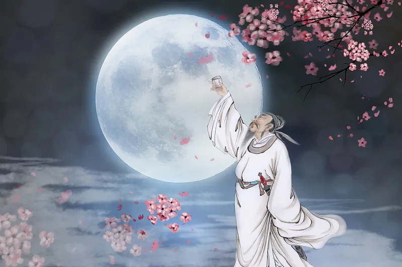
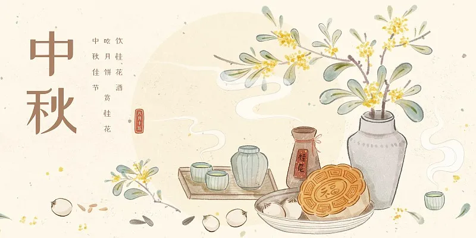

中秋节
———玉轮皎皎庆团圆
历史脉络
中秋起源可溯至周代秋分祭月，《礼记》载“天子春朝日，秋夕月”。唐代文人始兴赏月雅集，李白“举杯邀明月”开浪漫先河。北宋《东京梦华录》记载“中秋夜，贵家结饰台榭，民间争占酒楼玩月”。明清时月饼成为节礼核心，《帝京景物略》详述“月饼绘月宫蟾兔”之形。
风俗全景：
拜月祈福：
苏州妇女“走月亮”必穿牡丹纹绣鞋，案头供“斗香”塔形香篆；
酥饼传情：
潮州朥饼用猪油起酥，云南云腿月饼含三年陈宣威火腿；
钱塘观潮：
南宋《梦粱录》载八月十八弄潮儿踏滚木表演，今演化为国际冲浪赛；
烧塔祈丰：
福建龙岩用千块红砖垒六米瓦塔，燃烧时撒松香粉迸发蓝焰。
文化内核
节日凝结“圆”的哲学意象，扬州博物馆藏清代“月宫镜”背面錾刻桂树玉兔，与NASA月球车照片同展，形成古今探月的时空对话。韩国“秋夕”保留摔跤与羌羌水舞，越南儿童提鲤鱼灯游行，印证中华文化圈共享的月神崇拜。
当代创新
中国航天局推出“太空月饼”，采用冻干技术保存莲蓉馅料；广州塔中秋灯光秀用无人机组成动态嫦娥奔月图。2023年元宇宙平台“Decentraland”开设虚拟灯市，用户可用NFT兑换数字兔儿爷。

